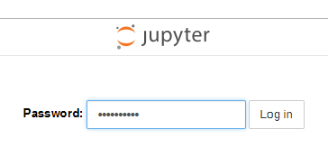

需求
为了更方便地学习python，就寻思着在腾讯云服务器上部署一个jupyter服务。
但是，如果只是起一个jupyter notebook在后台运行，那我就必须访问ladyrick.com:8888来访问（假设端口为8888）。
这是非常丑陋的。
我希望可以通过访问jupyter.ladyrick.com来访问我的jupyter服务。
另外，为了防止别人访问，只为我一个人服务，需要给jupyter服务设置密码。
解决方案
1. 为jupyter设置密码
这个非常简单了。直接运行1
jupyter notebook password
然后根据提示，输入密码即可。
这会在~/.jupyter/jupyter_notebook_config.json文件中写入密码的哈希值，这样以后在新浏览器登陆时，就需要输入密码。

2. 设置apache反向代理
首先我们先配置一下jupyter。
生成jupyter的配置文件：1
jupyter notebook --generate-config
这会将默认配置写入~/.jupyter/jupyter_notebook_config.py文件。
打开配置文件，修改配置项如下：1
2
3
4c.NotebookApp.port = 8888 # 自定义端口号。
c.NotebookApp.open_browser = False # 不打开浏览器。因为这是在命令行服务器上，自然没有浏览器。
c.NotebookApp.ip = "localhost" # 配置IP地址。localhost表明jupyter服务只能在本机访问。
c.NotebookApp.notebook_dir = "/home/username/jupyter" # jupyter的起始文件夹。不配置的话就是home文件夹。最好用绝对路径。
启用apache的一些mod。1
sudo a2enmod proxy proxy_http proxy_wstunnel
配置apache。
在/etc/apache2/sites-available下新建配置文件jupyter.conf。
配置文件内容如下：1
2
3
4
5
6
7
8
9
10
11
12
13
14
15
16
17
18
19
20
21
22<VirtualHost *:80>
ServerName jupyter.ladyrick.com
ProxyRequests off
<Location />
ProxyPass http://localhost:8888/
ProxyPassReverse http://localhost:8888/
ProxyPassReverseCookieDomain localhost jupyter.ladyrick.com
RequestHeader set Origin "http://localhost:8888"
</Location>
<Location /api/kernels/>
ProxyPass ws://localhost:8888/api/kernels/
ProxyPassReverse ws://localhost:8888/api/kernels/
</Location>
<Location /terminals/websocket/>
ProxyPass ws://localhost:8888/terminals/websocket/
ProxyPassReverse ws://localhost:8888/terminals/websocket/
</Location>
</VirtualHost>
保存关闭，并启用该配置：1
sudo a2ensite jupyter.conf
最后重启apache即可:1
sudo service apache2 restart
总结
密码配置简单，反向代理也很好配置，主要是一开始配置的反向代理，所有ws://协议的请求都失败了。
因此需要对websocket请求处理一下，不能直接使用顶层的配置，不然会转成http请求。
这个问题还困扰了挺久的。